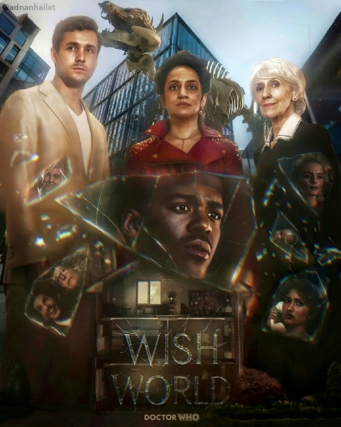
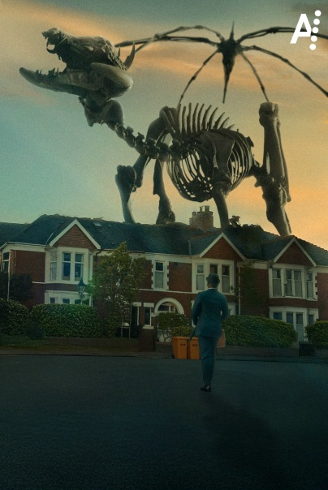
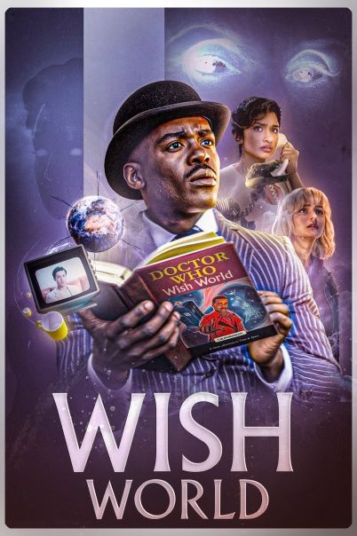

MVO [TVShows] 2.0 + 5.1, DUB [IRONVOICE], MVO [GoLTFilm], [LE-Production], [RHS], [ColdFilm], DVO [KerobTV] или Original [ENG]
Субтитры: Русские, форсированные или
Русские {TrueTransLate} - на английской дорожке
 Все 8 серий |
Wish World
Дата выхода: 24 мая 2025
Формат: 44-минутный эпизод
| Варианты озвучек: | * Разные: смотрите по инструкции |
|---|---|
| Скачивание и просмотр: |
Джон Смит и его жена Белинда Чандра просыпаются в своём семейном доме вместе с дочерью в, казалось бы, обычный день: они смотрят по телевизору Конрада Кларка и садятся завтракать, прежде чем Смит отправляется на работу. Но когда Руби Сандей приходит к ним с вопросами о его личности, становится лишь вопросом времени, когда правда выйдет наружу. Что же такое Мир желаний? И что таится в Подвселенной?


